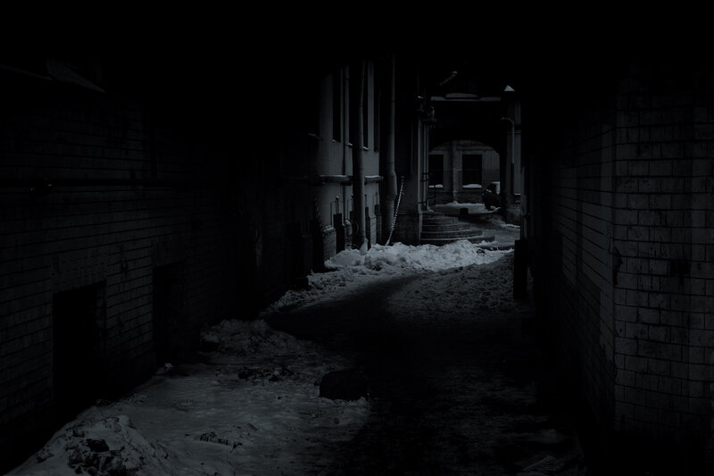

Выбор 1: Увеличить скорость и попытаться убежать.
Алексей продолжал бежать, пока его дыхание не выровнялось,
и постепенно он осознал, что шаги позади стихли.
Он замедлил бег, оглянулся, но никого не увидел
Похоже, преследователи потерялись где-то в темных переулках.
Однако чувство тревоги не покидало его.
Он понимал, что не может оставаться здесь надолго.
Решив, что нужно двигаться дальше, Алексей продолжил путь по узкому, плохо освещённому переулку.
Неожиданно он услышал шум — это было похоже на шаги,
но, прислушавшись, он понял, что это не его преследователи.
Возможно, кто-то другой блуждает в темноте.
Алексей мог:
Приблизиться к источнику звука, чтобы выяснить, кто там.
Уйти в другую сторону, чтобы не привлекать к себе внимания.
